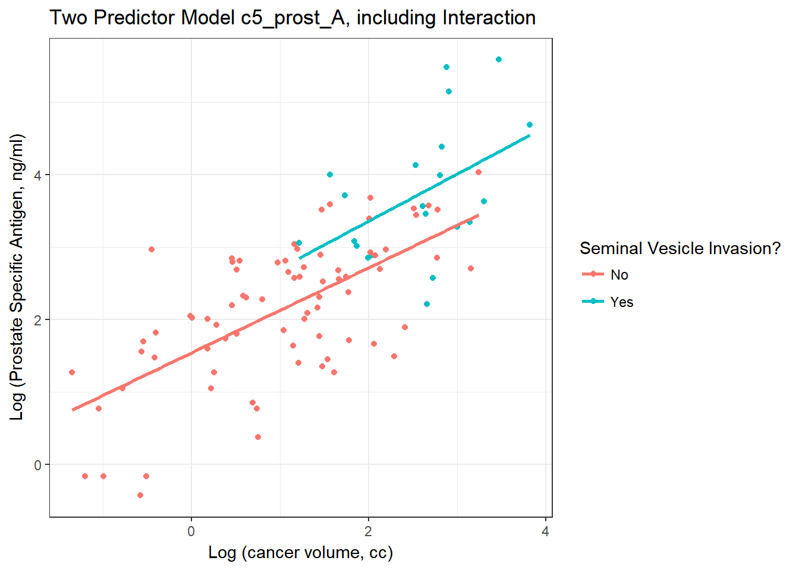
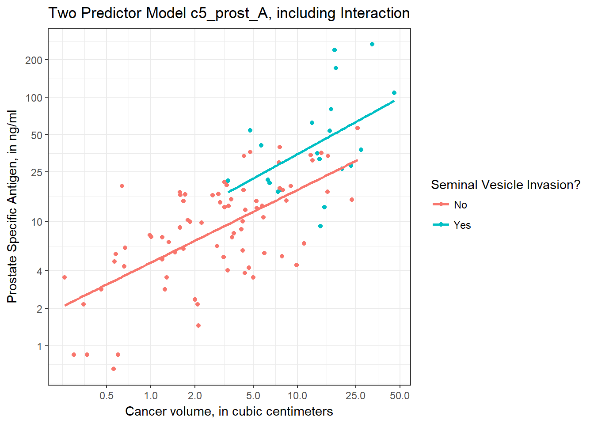
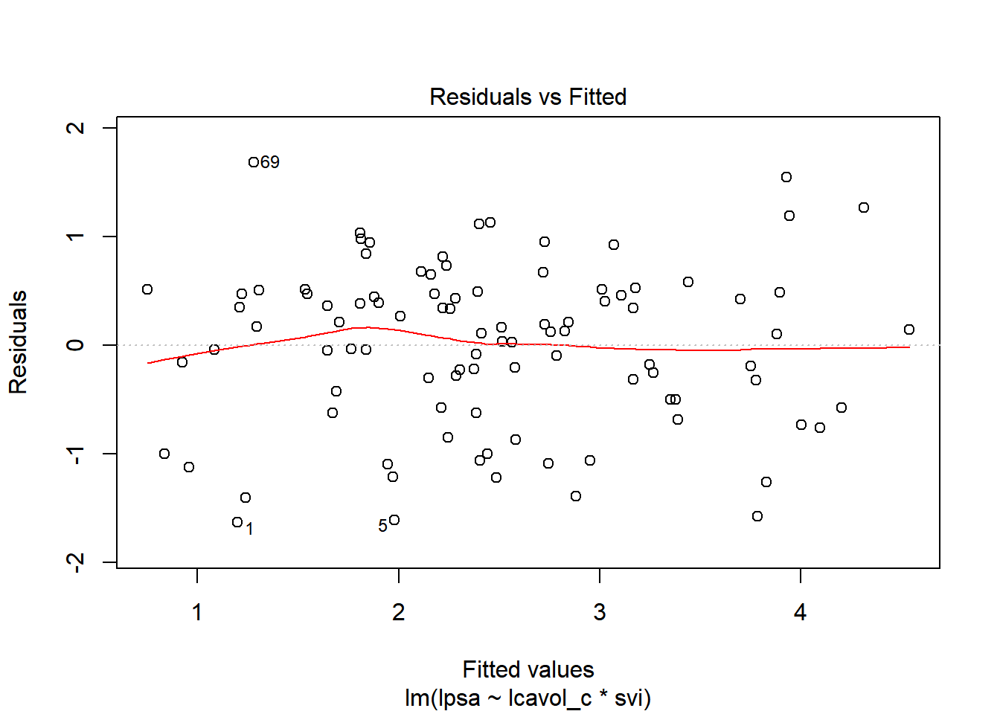
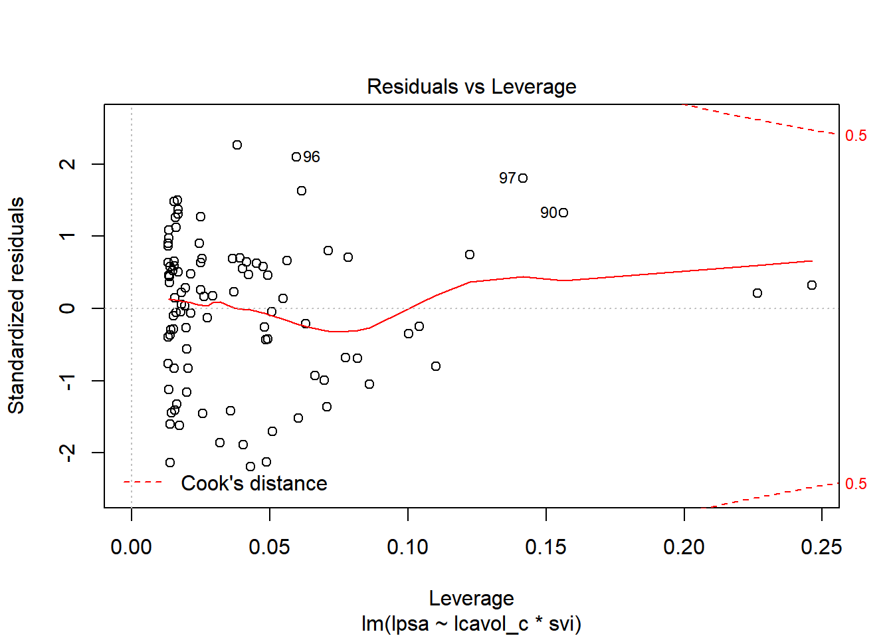
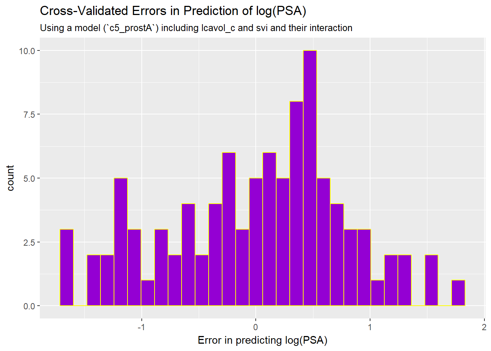
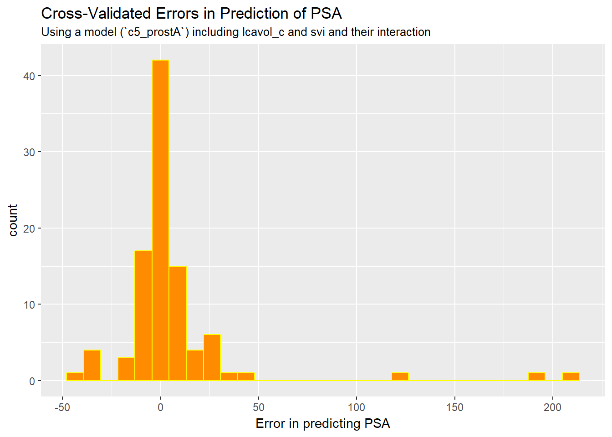

Chapter 6 A Study of Prostate Cancer
6.1 Data Load and Background
The data in prost.csv is derived from Stamey and others (1989) who examined the relationship between the level of prostate-specific antigen and a number of clinical measures in 97 men who were about to receive a radical prostatectomy. The prost data, as I’ll name it in R, contains 97 rows and 11 columns.
prost# A tibble: 97 x 10
subject lpsa lcavol lweight age bph svi lcp gleason pgg45
<int> <dbl> <dbl> <dbl> <int> <fct> <int> <dbl> <fct> <int>
1 1 -0.431 -0.580 2.77 50 Low 0 -1.39 6 0
2 2 -0.163 -0.994 3.32 58 Low 0 -1.39 6 0
3 3 -0.163 -0.511 2.69 74 Low 0 -1.39 7 20
4 4 -0.163 -1.20 3.28 58 Low 0 -1.39 6 0
5 5 0.372 0.751 3.43 62 Low 0 -1.39 6 0
6 6 0.765 -1.05 3.23 50 Low 0 -1.39 6 0
7 7 0.765 0.737 3.47 64 Medium 0 -1.39 6 0
8 8 0.854 0.693 3.54 58 High 0 -1.39 6 0
9 9 1.05 -0.777 3.54 47 Low 0 -1.39 6 0
10 10 1.05 0.223 3.24 63 Low 0 -1.39 6 0
# ... with 87 more rowsNote that a related prost data frame is also available as part of several R packages, including the faraway package, but there is an error in the lweight data for subject 32 in those presentations. The value of lweight for subject 32 should not be 6.1, corresponding to a prostate that is 449 grams in size, but instead the lweight value should be 3.804438, corresponding to a 44.9 gram prostate6.
I’ve also changed the gleason and bph variables from their presentation in other settings, to let me teach some additional details.
6.2 Code Book
| Variable | Description |
|---|---|
subject |
subject number (1 to 97) |
lpsa |
log(prostate specific antigen in ng/ml), our outcome |
lcavol |
log(cancer volume in cm3) |
lweight |
log(prostate weight, in g) |
age |
age |
bph |
benign prostatic hyperplasia amount (Low, Medium, or High) |
svi |
seminal vesicle invasion (1 = yes, 0 = no) |
lcp |
log(capsular penetration, in cm) |
gleason |
combined Gleason score (6, 7, or > 7 here) |
pgg45 |
percentage Gleason scores 4 or 5 |
Notes:
- in general, higher levels of PSA are stronger indicators of prostate cancer. An old standard (established almost exclusively with testing in white males, and definitely flawed) suggested that values below 4 were normal, and above 4 needed further testing. A PSA of 4 corresponds to an
lpsaof 1.39. - all logarithms are natural (base e) logarithms, obtained in R with the function
log() - all variables other than
subjectandlpsaare candidate predictors - the
gleasonvariable captures the highest combined Gleason score[^Scores range (in these data) from 6 (a well-differentiated, or low-grade cancer) to 9 (a high-grade cancer), although the maximum possible score is 10. 6 is the lowest score used for cancerous prostates. As this combination value increases, the rate at which the cancer grows and spreads should increase. This score refers to the combined Gleason grade, which is based on the sum of two areas (each scored 1-5) that make up most of the cancer.] in a biopsy, and higher scores indicate more aggressive cancer cells. It’s stored here as 6, 7, or > 7. - the
pgg45variable captures the percentage of individual Gleason scores[^The 1-5 scale for individual biopsies are defined so that 1 indicates something that looks like normal prostate tissue, and 5 indicates that the cells and their growth patterns look very abnormal. In this study, the percentage of 4s and 5s shown in the data appears to be based on 5-20 individual scores in most subjects.] that are 4 or 5, on a 1-5 scale, where higher scores indicate more abnormal cells.
6.3 Additions for Later Use
The code below adds to the prost tibble:
- a factor version of the
svivariable, calledsvi_f, with levels No and Yes, - a factor version of
gleasoncalledgleason_f, with the levels ordered > 7, 7, and finally 6, - a factor version of
bphcalledbph_f, with levels ordered Low, Medium, High, - a centered version of
lcavolcalledlcavol_c, - exponentiated
cavolandpsaresults derived from the natural logarithmslcavolandlpsa.
prost <- prost %>%
mutate(svi_f = fct_recode(factor(svi), "No" = "0", "Yes" = "1"),
gleason_f = fct_relevel(gleason, c("> 7", "7", "6")),
bph_f = fct_relevel(bph, c("Low", "Medium", "High")),
lcavol_c = lcavol - mean(lcavol),
cavol = exp(lcavol),
psa = exp(lpsa))
glimpse(prost)Observations: 97
Variables: 16
$ subject <int> 1, 2, 3, 4, 5, 6, 7, 8, 9, 10, 11, 12, 13, 14, 15, 1...
$ lpsa <dbl> -0.4307829, -0.1625189, -0.1625189, -0.1625189, 0.37...
$ lcavol <dbl> -0.5798185, -0.9942523, -0.5108256, -1.2039728, 0.75...
$ lweight <dbl> 2.769459, 3.319626, 2.691243, 3.282789, 3.432373, 3....
$ age <int> 50, 58, 74, 58, 62, 50, 64, 58, 47, 63, 65, 63, 63, ...
$ bph <fct> Low, Low, Low, Low, Low, Low, Medium, High, Low, Low...
$ svi <int> 0, 0, 0, 0, 0, 0, 0, 0, 0, 0, 0, 0, 0, 0, 0, 0, 0, 0...
$ lcp <dbl> -1.3862944, -1.3862944, -1.3862944, -1.3862944, -1.3...
$ gleason <fct> 6, 6, 7, 6, 6, 6, 6, 6, 6, 6, 6, 6, 7, 7, 7, 6, 7, 6...
$ pgg45 <int> 0, 0, 20, 0, 0, 0, 0, 0, 0, 0, 0, 0, 30, 5, 5, 0, 30...
$ svi_f <fct> No, No, No, No, No, No, No, No, No, No, No, No, No, ...
$ gleason_f <fct> 6, 6, 7, 6, 6, 6, 6, 6, 6, 6, 6, 6, 7, 7, 7, 6, 7, 6...
$ bph_f <fct> Low, Low, Low, Low, Low, Low, Medium, High, Low, Low...
$ lcavol_c <dbl> -1.9298281, -2.3442619, -1.8608352, -2.5539824, -0.5...
$ cavol <dbl> 0.56, 0.37, 0.60, 0.30, 2.12, 0.35, 2.09, 2.00, 0.46...
$ psa <dbl> 0.65, 0.85, 0.85, 0.85, 1.45, 2.15, 2.15, 2.35, 2.85...6.4 Fitting and Evaluating a Two-Predictor Model
To begin, let’s use two predictors (lcavol and svi) and their interaction in a linear regression model that predicts lpsa. I’ll call this model c5_prost_A
Earlier, we centered the lcavol values to facilitate interpretation of the terms. I’ll use that centered version (called lcavol_c) of the quantitative predictor, and the 1/0 version of the svi variable[^We could certainly use the factor version of svi here, but it won’t change the model in any meaningful way. There’s no distinction in model fitting via lm between a 0/1 numeric variable and a No/Yes factor variable. The factor version of this information will be useful elsewhere, for instance in plotting the model.].
c5_prost_A <- lm(lpsa ~ lcavol_c * svi, data = prost)
summary(c5_prost_A)
Call:
lm(formula = lpsa ~ lcavol_c * svi, data = prost)
Residuals:
Min 1Q Median 3Q Max
-1.6305 -0.5007 0.1266 0.4886 1.6847
Coefficients:
Estimate Std. Error t value Pr(>|t|)
(Intercept) 2.33134 0.09128 25.540 < 2e-16 ***
lcavol_c 0.58640 0.08207 7.145 1.98e-10 ***
svi 0.60132 0.35833 1.678 0.0967 .
lcavol_c:svi 0.06479 0.26614 0.243 0.8082
---
Signif. codes: 0 '***' 0.001 '**' 0.01 '*' 0.05 '.' 0.1 ' ' 1
Residual standard error: 0.7595 on 93 degrees of freedom
Multiple R-squared: 0.5806, Adjusted R-squared: 0.5671
F-statistic: 42.92 on 3 and 93 DF, p-value: < 2.2e-166.4.1 Using tidy
It can be very useful to build a data frame of the model’s results. We can use the tidy function in the broom package to do so.
tidy(c5_prost_A) term estimate std.error statistic p.value
1 (Intercept) 2.33134409 0.09128253 25.5398727 8.246849e-44
2 lcavol_c 0.58639599 0.08206929 7.1451331 1.981492e-10
3 svi 0.60131973 0.35832695 1.6781314 9.667899e-02
4 lcavol_c:svi 0.06479298 0.26614194 0.2434527 8.081909e-01This makes it much easier to pull out individual elements of the model fit.
For example, to specify the coefficient for svi, rounded to three decimal places, I could use tidy(c5_prost_A) %>% filter(term == "svi") %>% select(estimate) %>% round(., 3)
- The result is 0.601.
- If you look at the Markdown file, you’ll see that the number shown in the bullet point above this one was generated using inline R code, and the function specified above.
6.4.2 Interpretation
- The intercept, 2.33, for the model is the predicted value of
lpsawhenlcavolis at its average and there is no seminal vesicle invasion (e.g.svi= 0). - The coefficient for
lcavol_c, 0.59, is the predicted change inlpsaassociated with a one unit increase inlcavol(orlcavol_c) when there is no seminal vesicle invasion. - The coefficient for
svi, 0.60, is the predicted change inlpsaassociated with having nosvito having ansviwhile thelcavolremains at its average. - The coefficient for
lcavol_c:svi, the product term, which is 0.06, is the difference in the slope oflcavol_cfor a subject withsvias compared to one with nosvi.
Note: If you look at the R Markdown, you’ll notice that in bullet point 3, I didn’t use round to round off the estimate (as I did in the other three bullets), but instead a special function I specified at the start of the R Markdown file called specify_decimal() which uses the format function. This forces, in this case, the trailing zero in the two decimal representation of the svi coefficient to be shown. The special function, again, is:
specify_decimal <- function(x, k) format(round(x, k), nsmall=k)
6.5 Exploring Model c5_prost_A
The glance function from the broom package builds a nice one-row summary for the model.
glance(c5_prost_A) r.squared adj.r.squared sigma statistic p.value df logLik
1 0.5806435 0.5671158 0.7594785 42.92278 1.678836e-17 4 -108.9077
AIC BIC deviance df.residual
1 227.8153 240.6889 53.64311 93This summary includes, in order,
- the model \(R^2\), adjusted \(R^2\) and \(\hat{\sigma}\), the residual standard deviation,
- the ANOVA F statistic and associated p value,
- the number of degrees of freedom used by the model, and its log-likelihood ratio
- the model’s AIC (Akaike Information Criterion) and BIC (Bayesian Information Criterion)
- the model’s deviance statistic and residual degrees of freedom
6.5.1 summary for Model c5_prost_A
If necessary, we can also run summary on this c5_prost_A object to pick up some additional summaries. Since the svi variable is binary, the interaction term is, too, so the t test here and the F test in the ANOVA yield the same result.
summary(c5_prost_A)
Call:
lm(formula = lpsa ~ lcavol_c * svi, data = prost)
Residuals:
Min 1Q Median 3Q Max
-1.6305 -0.5007 0.1266 0.4886 1.6847
Coefficients:
Estimate Std. Error t value Pr(>|t|)
(Intercept) 2.33134 0.09128 25.540 < 2e-16 ***
lcavol_c 0.58640 0.08207 7.145 1.98e-10 ***
svi 0.60132 0.35833 1.678 0.0967 .
lcavol_c:svi 0.06479 0.26614 0.243 0.8082
---
Signif. codes: 0 '***' 0.001 '**' 0.01 '*' 0.05 '.' 0.1 ' ' 1
Residual standard error: 0.7595 on 93 degrees of freedom
Multiple R-squared: 0.5806, Adjusted R-squared: 0.5671
F-statistic: 42.92 on 3 and 93 DF, p-value: < 2.2e-16If you’ve forgotten the details of the pieces of this summary, review the Part C Notes from 431.
6.5.2 Adjusted R2
R2 is greedy.
- R2 will always suggest that we make our models as big as possible, often including variables of dubious predictive value.
- As a result, there are various methods for penalizing R2 so that we wind up with smaller models.
- The adjusted R2 is often a useful way to compare multiple models for the same response.
- \(R^2_{adj} = 1 - \frac{(1-R^2)(n - 1)}{n - k}\), where \(n\) = the number of observations and \(k\) is the number of coefficients estimated by the regression (including the intercept and any slopes).
- So, in this case, \(R^2_{adj} = 1 - \frac{(1 - 0.5806)(97 - 1)}{97 - 4} = 0.5671\)
- The adjusted R2 value is not, technically, a proportion of anything, but it is comparable across models for the same outcome.
- The adjusted R2 will always be less than the (unadjusted) R2.
6.5.3 Coefficient Confidence Intervals
Here are the 90% confidence intervals for the coefficients in Model A. Adjust the level to get different intervals.
confint(c5_prost_A, level = 0.90) 5 % 95 %
(Intercept) 2.17968697 2.4830012
lcavol_c 0.45004577 0.7227462
svi 0.00599401 1.1966454
lcavol_c:svi -0.37737623 0.5069622What can we conclude from this about the utility of the interaction term?
6.5.4 ANOVA for Model c5_prost_A
The interaction term appears unnecessary. We might wind up fitting the model without it. A complete ANOVA test is available, including a p value, if you want it.
anova(c5_prost_A)Analysis of Variance Table
Response: lpsa
Df Sum Sq Mean Sq F value Pr(>F)
lcavol_c 1 69.003 69.003 119.6289 < 2.2e-16 ***
svi 1 5.237 5.237 9.0801 0.003329 **
lcavol_c:svi 1 0.034 0.034 0.0593 0.808191
Residuals 93 53.643 0.577
---
Signif. codes: 0 '***' 0.001 '**' 0.01 '*' 0.05 '.' 0.1 ' ' 1Note that the anova approach for a lm object is sequential. The first row shows the impact of lcavol_c as compared to a model with no predictors (just an intercept). The second row shows the impact of adding svi to a model that already contains lcavol_c. The third row shows the impact of adding the interaction (product) term to the model with the two main effects. So the order in which the variables are added to the regression model matters for this ANOVA. The F tests here describe the incremental impact of each covariate in turn.
6.5.5 Residuals, Fitted Values and Standard Errors with augment
The augment function in the broom package builds a data frame including the data used in the model, along with predictions (fitted values), residuals and other useful information.
c5_prost_A_frame <- augment(c5_prost_A) %>% tbl_df
skim(c5_prost_A_frame)Skim summary statistics
n obs: 97
n variables: 10
Variable type: integer
variable missing complete n mean sd p0 p25 median p75 p100
svi 0 97 97 0.22 0.41 0 0 0 0 1
Variable type: numeric
variable missing complete n mean sd p0 p25 median
.cooksd 0 97 97 0.011 0.02 6.9e-06 0.00078 0.0035
.fitted 0 97 97 2.48 0.88 0.75 1.84 2.4
.hat 0 97 97 0.041 0.041 0.013 0.016 0.025
.resid 0 97 97 -6.9e-17 0.75 -1.63 -0.5 0.13
.se.fit 0 97 97 0.14 0.061 0.087 0.095 0.12
.sigma 0 97 97 0.76 0.0052 0.74 0.76 0.76
.std.resid 0 97 97 0.0012 1.01 -2.19 -0.69 0.17
lcavol_c 0 97 97 5.4e-17 1.18 -2.7 -0.84 0.097
lpsa 0 97 97 2.48 1.15 -0.43 1.73 2.59
p75 p100
0.01 0.13
3.07 4.54
0.049 0.25
0.49 1.68
0.17 0.38
0.76 0.76
0.65 2.26
0.78 2.47
3.06 5.58Elements shown here include:
.fittedFitted values of model (or predicted values).se.fitStandard errors of fitted values.residResiduals (observed - fitted values).hatDiagonal of the hat matrix (these indicate leverage - points with high leverage indicate unusual combinations of predictors - values more than 2-3 times the mean leverage are worth some study - leverage is always between 0 and 1, and measures the amount by which the predicted value would change if the observation’s y value was increased by one unit - a point with leverage 1 would cause the line to follow that point perfectly).sigmaEstimate of residual standard deviation when corresponding observation is dropped from model.cooksdCook’s distance, which helps identify influential points (values of Cook’s d > 0.5 may be influential, values > 1.0 almost certainly are - an influential point changes the fit substantially when it is removed from the data).std.residStandardized residuals (values above 2 in absolute value are worth some study - treat these as normal deviates [Z scores], essentially)
See ?augment.lm in R for more details.
6.5.6 Making Predictions with c5_prost_A
Suppose we want to predict the lpsa for a patient with cancer volume equal to this group’s mean, for both a patient with and without seminal vesicle invasion, and in each case, we want to use a 90% prediction interval?
newdata <- data.frame(lcavol_c = c(0,0), svi = c(0,1))
predict(c5_prost_A, newdata, interval = "prediction", level = 0.90) fit lwr upr
1 2.331344 1.060462 3.602226
2 2.932664 1.545742 4.319586Since the predicted value in fit refers to the natural logarithm of PSA, to make the predictions in terms of PSA, we would need to exponentiate. The code below will accomplish that task.
pred <- predict(c5_prost_A, newdata, interval = "prediction", level = 0.90)
exp(pred) fit lwr upr
1 10.29177 2.887706 36.67978
2 18.77758 4.691450 75.157506.6 Plotting Model c5_prost_A
6.6.0.1 Plot logs conventionally
Here, we’ll use ggplot2 to plot the logarithms of the variables as they came to us, on a conventional coordinate scale. Note that the lines are nearly parallel. What does this suggest about our Model A?
ggplot(prost, aes(x = lcavol, y = lpsa, group = svi_f, color = svi_f)) +
geom_point() +
geom_smooth(method = "lm", se = FALSE) +
scale_color_discrete(name = "Seminal Vesicle Invasion?") +
theme_bw() +
labs(x = "Log (cancer volume, cc)",
y = "Log (Prostate Specific Antigen, ng/ml)",
title = "Two Predictor Model c5_prost_A, including Interaction")
6.6.0.2 Plot on log-log scale
Another approach (which might be easier in some settings) would be to plot the raw values of Cancer Volume and PSA, but use logarithmic axes, again using the natural (base e) logarithm, as follows. If we use the default choice with `trans = “log”, we’ll find a need to select some useful break points for the grid, as I’ve done in what follows.
ggplot(prost, aes(x = cavol, y = psa, group = svi_f, color = svi_f)) +
geom_point() +
geom_smooth(method = "lm", se = FALSE) +
scale_color_discrete(name = "Seminal Vesicle Invasion?") +
scale_x_continuous(trans = "log",
breaks = c(0.5, 1, 2, 5, 10, 25, 50)) +
scale_y_continuous(trans = "log",
breaks = c(1, 2, 4, 10, 25, 50, 100, 200)) +
theme_bw() +
labs(x = "Cancer volume, in cubic centimeters",
y = "Prostate Specific Antigen, in ng/ml",
title = "Two Predictor Model c5_prost_A, including Interaction")
I’ve used the break point of 4 on the Y axis because of the old rule suggesting further testing for asymptomatic men with PSA of 4 or higher, but the other break points are arbitrary - they seemed to work for me, and used round numbers.
6.6.1 Residual Plots of c5_prost_A
plot(c5_prost_A, which = 1)
plot(c5_prost_A, which = 5)
6.7 Cross-Validation of Model c5_prost_A
Suppose we want to evaluate whether our model c5_prost_A predicts effectively in new data.
One approach (used, for instance, in 431) would be to split our sample into a separate training (perhaps 70% of the data) and test (perhaps 30% of the data) samples, and then:
- fit the model in the training sample,
- use the resulting model to make predictions for
lpsain the test sample, and
- use the resulting model to make predictions for
- evaluate the quality of those predictions, perhaps by comparing the results to what we’d get using a different model.
One problem with this approach is that with a small data set like this, we may be reluctant to cut our sample size for the training or the testing down because we’re afraid that our model building and testing will be hampered by a small sample size. A potential solution is the idea of cross-validation, which involves partitioning our data into a series of training-test subsets, multiple times, and then combining the results.
The rest of this section is built on some material by David Robinson at https://rpubs.com/dgrtwo/cv-modelr.
Suppose that we want to perform what is called 10-crossfold separation. In words, this approach splits the 97 observations in our prost data frame into 10 exclusive partitions of about 90% (so about 87-88 observations) into a training sample, and the remaining 10% (9-10 observations) in a test sample7. We then refit a model of interest using the training data, and fit the resulting model on the test data using the broom package’s augment function. This process is then repeated (a total of 10 times) so that each observation is used 9 times in the training sample, and once in the test sample.
To code this in R, we’ll make use of a few new ideas. Our goal will be to cross-validate model c5_prost_A, which, you’ll recall, uses lcavol_c, svi and their interaction, to predict lpsa in the prost data.
- First, we set a seed for the validation algorithm, so we can replicate our results down the line.
- Then we use the
crossv_kfoldfunction from themodelrpackage to split theprostdata into ten different partitions, and then use each partition for a split into training and test samples, which the machine indexes withtrainandtest. - Then we use some magic and the
mapfunction from thepurrrpackage (part of the coretidyverse) to fit a newlm(lpsa ~ lcavol_c * svi)model to each of the training samples genereated bycrossv_kfold. - Finally, some additional magic with the
unnestandmap2functions applies each of these new models to the appropriate test sample, and generate predictions (.fitted) and standard errors for each prediction (.se.fit).
set.seed(4320308)
prost_models <- prost %>%
crossv_kfold(k = 10) %>%
mutate(model = map(train, ~ lm(lpsa ~ lcavol_c * svi, data = .)))
prost_predictions <- prost_models %>%
unnest(map2(model, test, ~ augment(.x, newdata = .y)))
head(prost_predictions)# A tibble: 6 x 19
.id subject lpsa lcavol lweight age bph svi lcp gleason
<chr> <int> <dbl> <dbl> <dbl> <int> <fct> <int> <dbl> <fct>
1 01 3 -0.163 -0.511 2.69 74 Low 0 -1.39 7
2 01 12 1.27 -1.35 3.60 63 Medium 0 -1.39 6
3 01 16 1.45 1.54 3.06 66 Low 0 -1.39 6
4 01 18 1.49 2.29 3.65 66 Low 0 0.372 6
5 01 30 1.89 2.41 3.38 65 Low 0 1.62 6
6 01 34 2.02 0.00995 3.27 54 Low 0 -1.39 6
# ... with 9 more variables: pgg45 <int>, svi_f <fct>, gleason_f <fct>,
# bph_f <fct>, lcavol_c <dbl>, cavol <dbl>, psa <dbl>, .fitted <dbl>,
# .se.fit <dbl>The results are a set of predictions based on the splits into training and test groups (remember there are 10 such splits, indexed by .id) that describe the complete set of 97 subjects again.
6.7.1 Cross-Validated Summaries of Prediction Quality
Now, we can calculate the root Mean Squared Prediction Error (RMSE) and Mean Absolute Prediction Error (MAE) for this modeling approach (using lcavol_c and svi to predict lpsa) across these observations.
prost_predictions %>%
summarize(RMSE_ourmodel = sqrt(mean((lpsa - .fitted) ^2)),
MAE_ourmodel = mean(abs(lpsa - .fitted)))# A tibble: 1 x 2
RMSE_ourmodel MAE_ourmodel
<dbl> <dbl>
1 0.783 0.638For now, we’ll compare our model to the “intercept only” model that simply predicts the mean lpsa across all patients.
prost_predictions %>%
summarize(RMSE_intercept = sqrt(mean((lpsa - mean(lpsa)) ^2)),
MAE_intercept = mean(abs(lpsa - mean(lpsa))))# A tibble: 1 x 2
RMSE_intercept MAE_intercept
<dbl> <dbl>
1 1.15 0.891So our model looks meaningfully better than the “intercept only” model, in that both the RMSE and MAE are much lower (better) with our model.
Another thing we could do with this tibble of predictions we have created is to graph the size of the prediction errors (observed lpsa minus predicted values in .fitted) that our modeling approach makes.
prost_predictions %>%
mutate(errors = lpsa - .fitted) %>%
ggplot(., aes(x = errors)) +
geom_histogram(bins = 30, fill = "darkviolet", col = "yellow") +
labs(title = "Cross-Validated Errors in Prediction of log(PSA)",
subtitle = "Using a model (`c5_prostA`) including lcavol_c and svi and their interaction",
x = "Error in predicting log(PSA)")
This suggests that some of our results are off by quite a bit, on the log(PSA) scale, which is summarized for the original data below.
prost %>% skim(lpsa)Skim summary statistics
n obs: 97
n variables: 16
Variable type: numeric
variable missing complete n mean sd p0 p25 median p75 p100
lpsa 0 97 97 2.48 1.15 -0.43 1.73 2.59 3.06 5.58If we like, we could transform the predictions and observed values back to the scale of PSA (unlogged) and then calculate and display errors, as follows:
prost_predictions %>%
mutate(err.psa = exp(lpsa) - exp(.fitted)) %>%
ggplot(., aes(x = err.psa)) +
geom_histogram(bins = 30, fill = "darkorange", col = "yellow") +
labs(title = "Cross-Validated Errors in Prediction of PSA",
subtitle = "Using a model (`c5_prostA`) including lcavol_c and svi and their interaction",
x = "Error in predicting PSA")
This suggests that some of our results are off by quite a bit, on the original scale of PSA, which is summarized below.
prost %>% mutate(psa = exp(lpsa)) %>% skim(psa)Skim summary statistics
n obs: 97
n variables: 16
Variable type: numeric
variable missing complete n mean sd p0 p25 median p75 p100
psa 0 97 97 23.74 40.83 0.65 5.65 13.35 21.25 265.85We’ll return to the notion of cross-validation again, but for now, let’s consider the problem of considering adding more predictors to our model, and then making sensible selections as to which predictors actually should be incorporated.
References
Stamey, J.N. Kabalin, T.A., and others. 1989. “Prostate Specific Antigen in the Diagnosis and Treatment of Adenocarcinoma of the Prostate: II. Radical Prostatectomy Treated Patients.” Journal of Urology 141(5): 1076–83. https://www.ncbi.nlm.nih.gov/pubmed/2468795.
https://statweb.stanford.edu/~tibs/ElemStatLearn/ attributes the correction to Professor Stephen W. Link.↩
If we did 5-crossfold validation, we’d have 5 partitions into samples of 80% training and 20% test samples.↩